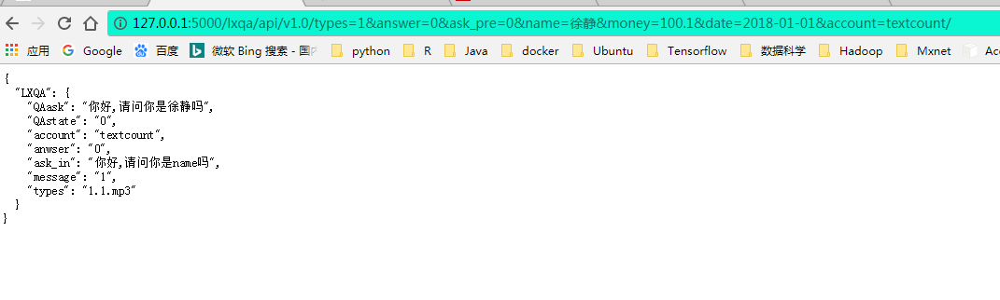
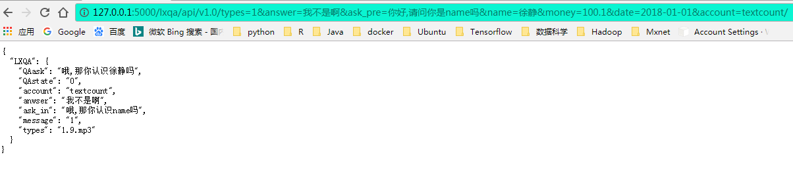

第 2 章 返回JSON的API
目前联信自呼机器人类似于百度和科大讯飞的ASR和TTS的REST API接口，我们同样提供了联信自呼机器人的REST API接口，目前仅支持HTTP协议的GET请求，通过GET请求，返回JSON字符串，字符串中包含了联信自呼机器人的文本相关的信息。
2.1 GET请求的格式：
http://ip:port/lxqa/api/v1.0/types=<types>&answer=<answer>&
ask_pre=<ask_pre>&name=<name>&money=<money>&date=<date>&account=<account>/
ip：ip地址，具体的联信商务咨询有限公司会提供
port： 端口号，具体的联信商务咨询有限公司会提供
types： 发声人，目前我们提供了三个发声人types=1:温暖女法务版，types=2:专业男法务版;types=3:专业男法务磁性版
answer： 上一轮债务人的反应对应的文本
ask_pre：上一轮联信自呼机器人的话术模板
name： 债务人的姓名
money：债务人对应的委案金额
date：接单时间
account：账户
2.2 举个栗子：
Example1:开始拨打电话，此时并没有answer和ask_pre字段，此时需用“0”填补这两个字段，此时的URL为：
http://ip:port/lxqa/api/v1.0/types=1&answer=0&ask_pre=0&
name=徐静&money=100.1&date=2018-01-01&account=testcount/types=1:调用温暖女法务版机器人
answer=0和ask_pre=0: 因是第一轮对话，没有answer和ask_pre因此传入参数“0”
name=徐静：债务人的姓名叫徐静
money=100.1:债务人的欠款金额是100.1
date=2018-01-01: 债务人的案件的接单时间是2018年01月01日(注意该格式可以是任意类型的时间字符串)
account=testcount: 债务人对应的系统账户为testcount
此时GET请求将会返回如下的JSON字符串

QAask: 当前自呼机器人的表述
QAstate: 当前自呼机器人的是否挂断的判断：“0”表示不挂断，“1”表示挂断，结束通话
account: 债务人的账户
answer: 债务人上一轮的表述
ask_in: 当前聊天机器人的话术模板，作为下一轮调用自呼机器人的ask_pre参数取值（GET请求时，ask_pre字段应该提交聊天机器人的话术）
identity: 债务人身份确认，可能性的取值有：0(当前无法判断),本人，其他联系人，异主
message: API调用的状态，“0”表示调用API异常，“1”表示调用API正常
types: 返回聊天机器人对用的音频文件
Example2：聊天过程中的调用，此时存在answer和ask_pre字段，此时需用传入真实的字段文本内容，此时的URL为：
http://ip:port/lxqa/api/v1.0/types=1&answer=不是啊&
ask_pre=你好,请问你是name吗&money=100.1&date=2018-01-01&account=textcount/
返回的JSON字段意义同Example1中，但要注意，在过程中GET请求的数据一定要填写answer和ask_pre字段，并且ask_pre字段的是聊天机器人的话术模板，而非真正的ask字段。
2.3 调用方式
可以通过Java,Python,R语言等工具，通过GET请求访问并实时获取API的数据。